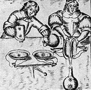

|
|
|
 |
| L'athanor |
| |
|  |
| L'aludel |
| |
 |
| Le
creuset |
|
 |
| Le
soleil et la lune |
|
|
|
|
1-
Le laboratoire ou officine
|
|
|
|
Les
officines se cachaient dans les profondeurs des maisons,
soit dans les greniers, soit dans les caves pour
assurer la discrétion des opérations qui s'y effectuaient.
On y trouvait un large fourneau, des vases, des alambics,
des matras, coupelles et creusets.
|
|
|
|
L'athanor
Il s'agit du four permettant de séparer la matière des
éléments. De forme ronde, composé de briques assez
épaisses pour conserver la chaleur, il est le réceptacle
des diverses opérations alchimiques. Il possède à sa
base le foyer, esprit de la transformation, puis la
chambre recevant successivement l'eau et l'air qui agit
comme un dissolvant.
|
|
|
|
L'aludel
complète l'installation. Il se compose de vases de terre
vernis, emboîtés les uns dans les autres au-dessus desquels
est placé un chapiteau dont le rôle est de recevoir
la matière qui résulte de l'opération. Le pélican
sert de récipient pour la circulation des liquides.
|
|
|
|
La
balance
L'alchimie étant une histoire d'exactitude et de
perfection, la balance apparaît comme un instrument
essentiel pouvant mesurer précisément les quantités
pour trouver l'harmonie.
|
|
|
|
Le
creuset
La fusion des métaux s'opère dans des vases auxquels
on a donné le nom de creusets. Composés d'argile
pure, ils sont chauffés dans des fourneaux de diverses
sortes selon le degré de chaleur nécessaire à la transformation
désirée. Le creuset est également appelé matras ou œuf
philosophique. Les textes hermétiques utilisent fréquemment
aussi les noms de sphère, prison, fiole, sépulcre, matrice.
|
|
|
|
L'élaboration
du Grand Œuvre n'est possible qu'avec le feu.
C'est pourquoi le foyer joue un rôle déterminant.
Les alchimistes utilisent trois sortes de chaleurs :
le feu humide ou bain-marie, le feu surnaturel ou artificiel
obtenu par l'ajout d'un acide et le feu naturel.
|
|
| 2-
Le soleil et la lune |
|
|
Zosime
de Panopolis, alchimiste alexandrin, écrivait dans ses Instructions
à Eusébie, que "Le grand Soleil produit l'œuvre car c'est
par le soleil que tout s'accomplit."
|
|
|
Assimilé
au Soufre rouge ou déterminant le point central de l'œuvre,
il est représenté par Hélios ou Osiris. Il est
très rapidement confondu avec Apollon alors que cette
association ne se justifie pas d'un point de vue hermétique.
|
|
|
Le
soleil n'est pas un ingrédient à proprement parlé mais
un principe actif. Il représente Dieu, l'aigle, le lion,
le cerf et bien sur l'or, alchimiquement appelé le "Soleil
des métaux". Il est l'aboutissement du Grand Œuvre,
l'obtention du magnum opus symbolisé par l'arbre solaire.
|
|
|
La
lune est aussi un principe important mais passif. Elle
symbolise le Mercure. Elle est l'aboutissement
du Petit Œuvre, symbolisé par l'arbre lunaire.
|
|
 |
| Le
soleil et la lune |
|
| 3-
Les métaux |
|
|
A
chaque planète est associé un métal selon sa couleur
dominante. Au nombre de sept, ils sont classés du plus
impurs aux plus purs. La transmutation doit passer
par ces étapes successives avant d'atteindre la perfection.
|
|
|
| Plombs
> Etain
> Cuivre > Fer > Mercure > Argent >
Or |
| |
(Pb) |
(St) |
(Cu) |
(Fe) |
(Hg) |
(Ag) |
(Au) |
|
|
|
|
| 4-
Les métaux |
|
|
Les
alchimistes utilisent les 4 éléments afin de
purifier la matière. Ils interagissent selon leur
caractère commun comme par exemple la terre sèche
avec le feu sec.
|
|
|
Symboliquement
parlant, il s'agit de séparer l'âme du corps et d'atteindre
Dieu.
|
|